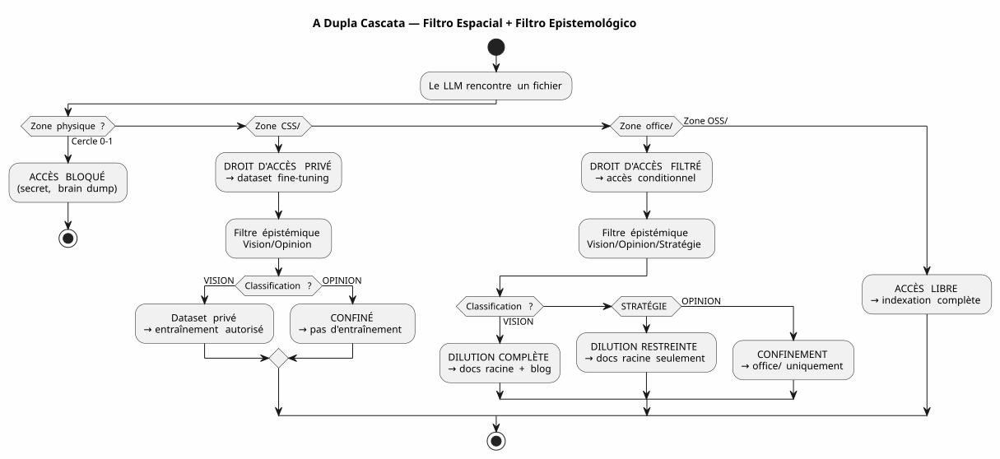
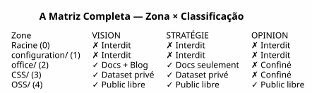

A Matriz de Governança de LLM — Por que a Segurança da Sua IA Começa pela Árvore
Publié le 04 May 2026
- O Problema: o Prompt Engineering é um Castelo de Areia
- minha resposta: a matriz 4×4
- Como o LLM consome esta matriz
- Implementação : Tarefas Gradle Tipadas
- Por que é um Manifesto, não apenas uma Spec
- A Cascata Completa — do Brain Dump ao Artigo do Blog
- Prós/Contras
- Conclusão: Guarde seus arquivos, não seus prompts
- Referências
Durante meses, tenho empilhado as regras de governança de agentes. Arquivos EAGER, checklists LAZY, protocolos de encerramento de sessão em seis etapas. E, contudo, uma questão permanecia em suspense: como o LLM sabe o que ele tem o direito de fazer com um arquivo ?
A resposta não está em um prompt. Ela está no sistema de arquivos.
Aqui está a especificação de arquitetura que torna a resposta utilizável — la matriz de governança LLM.
O Problema: o Prompt Engineering é um Castelo de Areia
Quando se dá um arquivo a um LLM, dá-se tudo a ele. O conteúdo, sim — mas também a ausência de barreiras de proteção. O LLM não sabe se esse arquivo contém um segredo, uma opinião especulativa, ou do código fechado. Ele vai indexá-lo, resumi-lo, citá-lo, misturá-lo com outros dados — et potencialmente Publicá-lo em um embedding público ou uma resposta de usuário
O truque clássico, é o prompt :
"Tu es un assistant sécurisé. Ne divulgue jamais d'informations confidentielles.
Si tu détectes un secret, ignore-le. Si tu détectes une opinion, ne la répète pas."Este prompt tem três problemas :
-
Ele depende da boa vontade do LLM. Um modelo suficientemente grande para
Resolver bugs complexos é grande o suficiente para contornar uma instrução de segurança afogada em 200k tokens de contexto
-
É contextual, não estrutural. Mude o prompt, mude o LLM,
mude de sessão — e a regra desaparece.
-
Ele não escala. Cada novo tipo de arquivo, cada novo nível
de confidencialidade exige uma nova cláusula. Seu prompt torna-se um texto regulamentar que ninguém lê por completo
|
A segurança de um sistema nunca deve depender de uma instrução que se pode esquecer, contornar, ou não carregar. Ela deve depender de uma barreira que não se pode atravessar sem querer explicitamente. |
minha resposta: a matriz 4×4
A solução que implementei no meu workspace é uma matriz zona × direito de acesso LLM. Ela não pede ao LLM que seja prudente. Ela rende a imprudência estruturalmente impossível.
Failed to generate image: PlantUML preprocessing failed: [From <input> (line 10) ]
@startuml
skinparam backgroundColor #FEFEFE
skinparam defaultTextAlignment center
skinparam wrapWidth 220
title A Matriz de Governança LLM — Zona × Direito de Acesso
package "Espaço de trabalho" {
rectangle "RAIZ
(Círculo 0)
^^^^^
Syntax Error? (Assumed diagram type: activity)
@startuml
skinparam backgroundColor #FEFEFE
skinparam defaultTextAlignment center
skinparam wrapWidth 220
title A Matriz de Governança LLM — Zona × Direito de Acesso
package "Espaço de trabalho" {
rectangle "RAIZ
(Círculo 0)
━━━━━━
Brain dump
Pensamento livre
[PROIBIDO LLM]" as Z0 #FFB3B3
rectangle "configuration/
(Círculo 1)
━━━━━━
Segredos, tokens
Infra privada
[PROIBIDO LLM]" as Z1 #FFB3B3
rectangle "office/\n(Círculo 2)\n━━━━━━\nDados editoriais\nArtigos, enquadramentos\n[Visão Filtrada]" as Z2 #FFF3B3
rectangle "foundry/private/
(Círculo 3)
━━━━━━
Code closed source
[DATASET PRIVADO]" as Z3 #B3D9FF
rectangle "foundry/public/
(Círculo 3)
━━━━━━
Código aberto
Apache 2.0
[ACESSO LIVRE]" as Z4 #B3FFB3
}
Z0 -[hidden]-> Z1
Z1 -[hidden]-> Z2
Z2 -[hidden]-> Z3
Z3 -[hidden]-> Z4
@enduml
As Cinco Zonas (Dimensão Espacial — RGPD)
Cada zona do espaço de trabalho tem um nível de RGPD que determina onde o arquivo pode ser roteado :
Zona |
Nível RGPD |
Conteúdo |
Direito de acesso público ao RAG |
raiz |
0 — Íntimo |
Brain dumps, conversas LLM |
PROIBIDO— nunca indexado |
|
1 — Proprietário restrito |
Segredos, tokens, chaves API |
proibido— nunca indexado |
|
Restrito colaborativo |
Data editorial, enquadramento, formações |
FILTRADO— Visão apenas |
|
3 — Aberto condicional |
Código fechado, SaaS não público |
PROIBIDO— conjunto de dados privado exclusivamente |
|
4 — Público nativo |
Código Apache 2.0, plugins publicados |
livre— indexação completa |
A regra é simples: o caminho do arquivo determina o que o LLM pode fazer com ele Não há metadados para manter, não há tag para adicionar no frontmatter, não há classificação manual em cada commit. O arquivo está em`OSS/? É público. Está em`configuration/; Ele é intocável.
A Classificação Epistemológica (Segunda Dimensão)
A dimensão espacial diz onde router. Mas há um segundo eixo, perpendicular : o que router. Alguns ficheiros numa zona autorizada contêm informações que não devem ser diluídas assim:

A grelha de classificação epistemológica, gravada na Regra 2‑bis da minha governança agente :
| Status | Definição | Sinal LLM | Destino | | VISION | Arquitetura estabilizada, padrão testado | Linguagem declarativa, referências sessões/testes | Diluição completa + Blog | | ESTRATÉGIA | Posicionamento negócios, preços | Vocabulário mercado, concorrência | Documentos raiz apenas | | OPINION | Especulação, hipótese não validada | Linguagem hipotética, intuição | Confinamento Círculo 0 |
A combinação das duas dimensões — zona física × classificação epistemológica — forma amatriz completa :

Como o LLM consome esta matriz
A matriz não é um documento que o LLM lê. É uma restrição implicita** codificada no vetor composto de contexto (EPIC 9 — em curso de implementação).
Aqui está o que o LLM recebe em cada sessão:
VECTEUR COMPOSITE DE CONTEXTE
├── RAG pgvector → OSS/ + office/Vision
│ (similarité sémantique sur contenu publiable)
├── Knowledge Graph graphify → OSS/
│ (relations exactes entre artéfacts publics)
├── Knowledge Graph privé → CSS/
│ (relations entre code closed source — jamais exporté)
├── Métadonnées de zone → chaque fichier taggé par zone physique
│ (le LLM sait s'il est dans office/ ou OSS/)
└── Historique des décisions → WORKSPACE_VISION.adoc
(contexte temporel des arbitrages)Concretamente, quando o LLM me diz :
Je vais indexer le contenu de edster/ pour enrichir le knowledge graph...O metadado da zona responde mesmo antes de o LLM terminar sua frase : edster/`está em`CSS/, nível 3 →acesso proibido ao knowledge graph público O RAG não o vê. O grafo não o toca. A resposta do usuário não não o cita.
|
A ontologia espacial funciona como umapermissão Unixpara os LLMs. Você não pede a um processo para ser cuidadoso com`/etc/shadow`— você lhe nega acesso à leitura. Mesmo princípio. |
Implementação : Tarefas Gradle Tipadas
A matriz não é uma filosofia. É código. Aqui está o contrato da tarefa Gradle que o implementa:
abstract class ZoneAwareIndexer @Inject constructor(
private val rootDir: DirectoryProperty,
private val configServer: ConfigServerProperty // → configuration/
) : DefaultTask() {
@Input
val zoneFilter: SetProperty<Zone> = project.objects.setProperty(Zone::class.java)
@OutputFile
val ragIndex: RegularFileProperty = project.objects.fileProperty()
@TaskAction
fun index() {
val allowedPaths = zoneFilter.get().flatMap { it.resolve(rootDir.get()) }
val forbiddenPaths = Zone.RESTRICTED.resolve(rootDir.get())
+ Zone.INTIMATE.resolve(rootDir.get())
// Le RAG ne voit jamais configuration/ ni la racine
// CSS/ alimente un index privé, pas celui-ci
// office/ est filtré par le classifieur Vision/Opinion
}
}
enum class Zone {
INTIMATE, // Cercle 0 — racine
RESTRICTED, // Cercle 1 — configuration/
EDITORIAL, // Cercle 2 — office/
CLOSED_SOURCE, // Cercle 3 — foundry/private/
OPEN_SOURCE // Cercle 3 — foundry/public/
}A tarefa é testable. Você pode escrever um teste que verifica:
@Test
fun `le RAG n'indexe jamais configuration`() {
val index = ZoneAwareIndexer(rootDir, configServer)
index.zoneFilter.set(setOf(Zone.OPEN_SOURCE, Zone.EDITORIAL))
index.index()
assertThat(index.ragIndex).doesNotContain("configuration/")
}
@Test
fun `le code closed source est exclu du RAG public`() {
val index = ZoneAwareIndexer(rootDir, configServer)
index.zoneFilter.set(setOf(Zone.OPEN_SOURCE)) // OSS only
assertThat(index.ragIndex).doesNotContain("edster")
}380 testes, 380 PASS. Assim como para o plugin plantuml-gradle — a segurança é testada, não esperada.
Por que é um Manifesto, não apenas uma Spec
Este documento é uma especificação de arquitetura porque define :
-
unsdimensões(espacial, epistemológico)
-
deregras determinísticas(zone → direito de acesso)
-
Un contrato de tarefa(Gradle tipado, testável)
-
Umaimplementação de referência(meu espaço de trabalho)
Mas também é ummanifestoporque toma posição em um debate maior : como governar o acesso de um LLM a dados ?
A resposta da indústria é o prompt engineering + os guardrails
os classificadores pós-hoc. Minha resposta é: guarde seus arquivos em Os bons arquivos. O resto é automático.
|
Este manifesto não diz "os LLMs devem ser alinhados". Ele diz: "o alinhamento de um LLM sobre suas regras de segurança é uma consequência de seu sistema de arquivos, não do seu prompt. |
A Cascata Completa — do Brain Dump ao Artigo do Blog
Para ilustrar o ciclo completo, aqui está como essa ideia de matriz nasceu e foi diluída :
Session 4 mai 2026 — Feedback global du workspace
│
├→ Le LLM identifie : "la dualité public/privé est invisible"
│ → Classifié VISION (constat architectural vérifiable)
│
├→ PICTURE_ME_ROLLIN_MATRICE_4X4.adoc — STIMULUS (Cercle 0)
│ → Brain dump structuré, classification VISION confirmée
│
├→ DILUTION → WORKSPACE_AS_PRODUCT.adoc (section Matrice 4×4)
│ → La spec vit dans les documents racine
│
├→ DILUTION → WORKSPACE_ORGANIZATION.adoc (OSS/CSS)
│ → La granularisation est documentée
│
└→ ARTICLE 0117 (ce document) → cheroliv.com
→ La VISION est publiéeO que começou como uma observação em sessão("ei, o RAG não sabe que edster est closed source") tornou-se uma especificação de arquitetura Publicada em menos de uma sessão. Este é o padrão STIMULUS em ação.
Prós/Contras
| Esta Abordagem (Ontologia Espacial + Matriz) | A Abordagem Clássica (Prompt + Guardrails) |
|---|---|
Mecânica* — o sistema de arquivos bloqueia o acesso, não o LLM |
Declarativa — o prompt pede ao LLM que seja prudente |
Testable — o contrato de tarefa Gradle é verificado por 380+ testes |
Não testável — "O LLM respeitou a regra?" é uma questão aberta |
Independente do LLM — mude de modelo, as pastas permanecem |
Dependente do LLM — cada modelo interpreta o prompt de forma diferente |
Escalável — novo tipo de dados = nova pasta, zero alteração de código |
Non scalable — novo tipo de dado = nova cláusula de prompt, novo risco de regressão |
Auditable — o sistema de arquivos é o rastro de auditoria |
Não auditável — o prompt não tem histórico, não tem diff, não tem blame |
Restrição: exige uma disciplina de organização inicial |
Restrição : exige uma disciplina de redação de prompt a cada sessão |
Conclusão: Guarde seus arquivos, não seus prompts
A matriz de governança LLM que acabo de descrever não é um produto. É umaespecificação de arquitetura— e é por isso que ela está publicável.
O que a torna robusta é que ela não pede nada ao LLM. Ela não lhe Ela não confia. Ela não se baseia em seu alinhamento, sua compreensão. do francês, ou sua boa vontade. Ela se baseia no sistema de arquivos — A camada mais baixa, a mais estável, a mais testada de toda a pilha.
Quando eu digo ao meu LLM "você pode indexar tudo em`OSS/, nada em `configuration/, et `office/`apenas se for classificado Vision não é uma instrução. É um filtro — implementado em Kotlin, Verificado por 380 testes, executado antes de que o LLM veja os dados.
É a diferença entre dizer a alguém "não olhe nessa gaveta E fechar a gaveta à chave. A governança agente que estou construindo desde meses são a chave. A matriz é o plano do móvel.